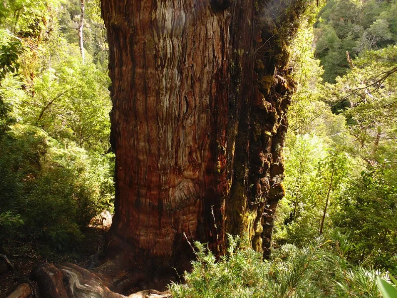

El Gran Abuelo: ¿el árbol más antiguo del planeta?

En un bosque húmedo del sur de Chile vive un alerce que podría tener más de 5.000 años. Si la cifra se confirma, sería el árbol vivo más antiguo que se conoce.
Lo llaman el Gran Abuelo. Es un alerce, una especie cuyo nombre científico es Fitzroya cupressoides, y está en el Parque Nacional Alerce Costero, en la comuna de La Unión, Región de Los Ríos. Su tronco mide más de cuatro metros de diámetro.
¿Cómo se sabe la edad de un árbol?
Lo habitual es contar los anillos del tronco: cada año, el árbol forma uno nuevo. Para no cortarlo, los científicos usan un barreno, una herramienta que extrae una muestra delgada de madera desde la corteza hacia el centro.
Un tronco demasiado ancho
Con el Gran Abuelo ese método se quedó corto. El barreno alcanzó solo cerca del 40% del tronco, y en esa muestra se contaron unos 2.400 años.
Para estimar el resto, el científico chileno Jonathan Barichivich usó un modelo estadístico basado en otros alerces de la zona. El resultado fue una edad estimada de 5.484 años, con un 80% de probabilidad de que el árbol supere los 5.000.
¿Más viejo que Matusalén?
Hasta ahora, el árbol vivo más antiguo reconocido es Matusalén, un pino de California con 4.853 años. Si la estimación del Gran Abuelo es correcta, el alerce chileno lo superaría por más de seis siglos.
Una cifra todavía en discusión
No todos los especialistas están convencidos. Varios sostienen que solo un conteo completo de los anillos permite afirmar la edad con certeza, y que una estimación hecha con un modelo debe tomarse con cautela. Por eso el título de esta nota lleva signos de pregunta.
Si lo visitas
Los árboles tan antiguos son frágiles. Camina solo por los senderos y pasarelas habilitados, no toques el tronco ni pises sus raíces, y sigue las indicaciones de los guardaparques.